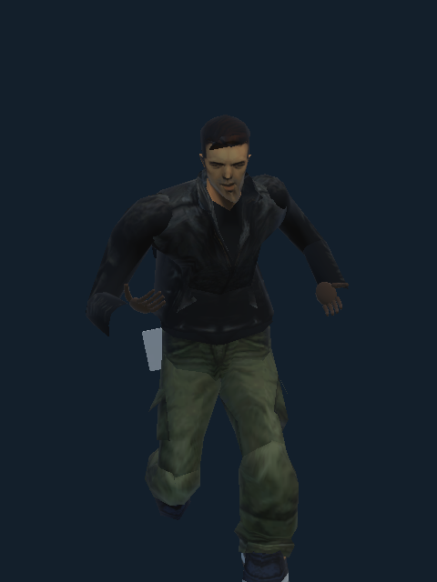
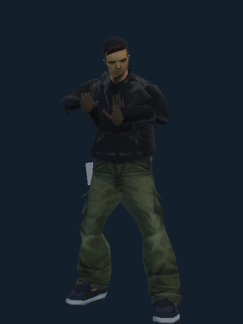
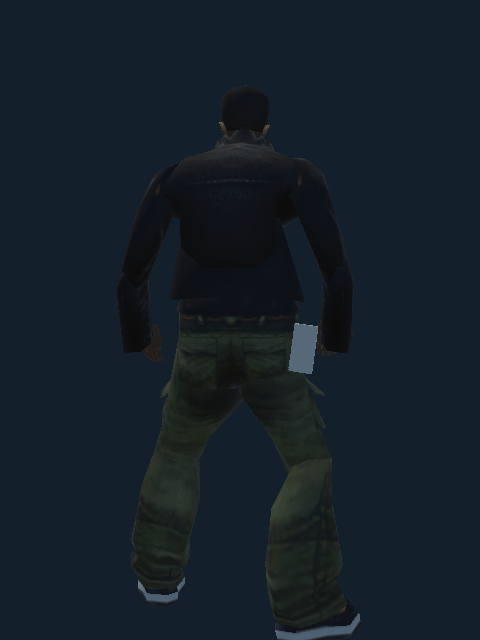
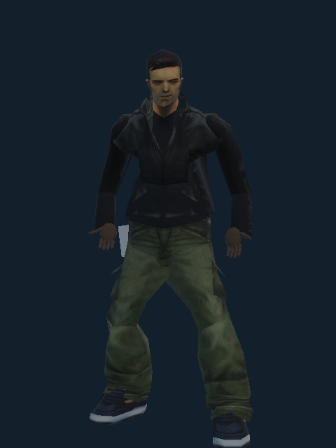
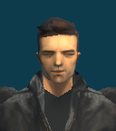
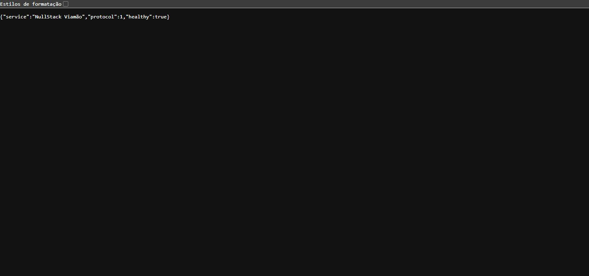

Railway e PostgreSQL · 1.28.0
Conexão e jogo na API Railway; regressão de orientação dos personagens.
 Orientacao · cj-retrato
Orientacao · cj-retrato
Orientacao · claude-andando
Orientacao · claude-arma
Orientacao · claude-costas
Orientacao · claude-frente
Orientacao · claude-retrato
Navegador · api-salas